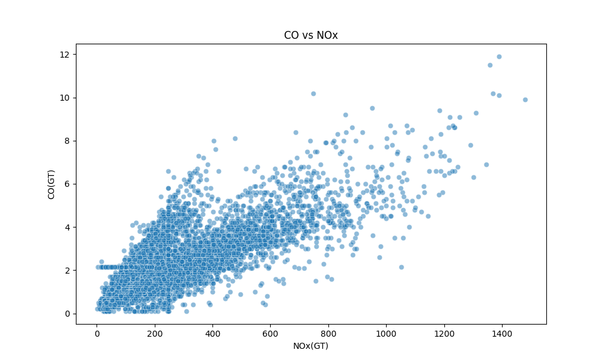

Module 1
Exploratory Data Analysis
Data was loaded, cleaned, missing values imputed, and a rush-hour feature engineered from timestamps.
Sentinel Value
–200 used as missing marker, replaced with NaN then imputed with column means.
–200 used as missing marker, replaced with NaN then imputed with column means.
Rush-Hour Feature
Binary dummy: 1 if time is 08–10h or 17–19h, capturing commute pollution spikes.
Binary dummy: 1 if time is 08–10h or 17–19h, capturing commute pollution spikes.
Output
cleaned_airquality.csv — the single source of truth for all downstream modules.
cleaned_airquality.csv — the single source of truth for all downstream modules.
Sensor Correlation Heatmap

Strong positive correlation between CO, Benzene and NMHC sensors. Temperature shows expected seasonal behavior.
Temperature Distribution

Temperature follows a roughly bimodal distribution reflecting seasonal variation across the dataset's one-year span.
CO vs NOx Scatter

Positive trend between CO and NOx confirms both are driven by traffic combustion sources.